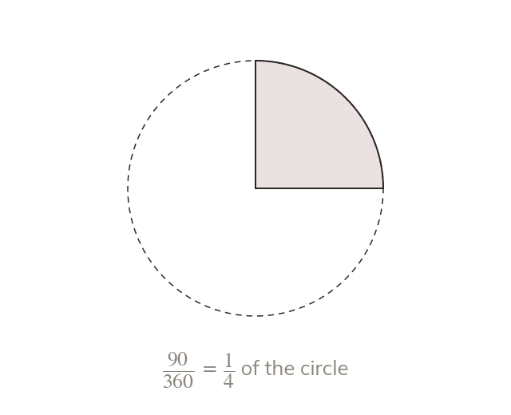

A sector is a fraction of a turn
A sector's angle is a fraction of the full Its area is that same fraction of the circle's area.
The angle between a sector's two radii is part of the full at the centre. The sector covers exactly that same fraction of the circle, so its area is θ/360 of